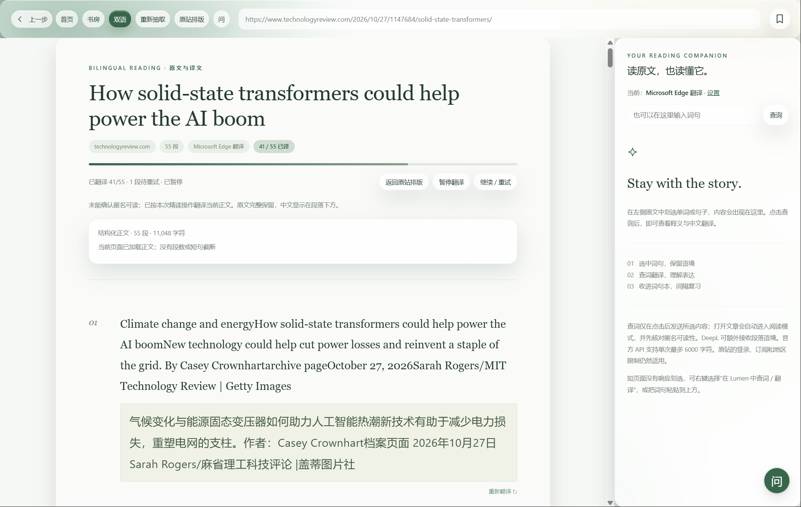
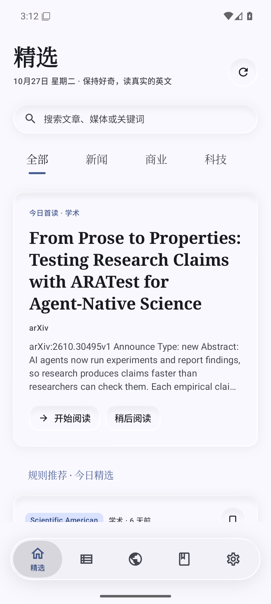

阅读模式
后台加载原站、抽取正文并过滤导航与广告区，译文排在英文段落下方；默认先看原站，开关可改成点文章直接精读。
英文世界，读懂一点。
面向英语学习的阅读应用：连接英文媒体、大学与研究机构，在原文里逐段读懂，顺手记下词句。桌面版与安卓版都在本机保存学习记录。
Features
原站页面随时可回，抽取与翻译都在应用里完成；查词、译文显示和提问都可以按自己的习惯调。
后台加载原站、抽取正文并过滤导航与广告区，译文排在英文段落下方；默认先看原站，开关可改成点文章直接精读。
点「双语」逐段翻译并显示进度，可随时暂停或恢复原文；默认用免密钥的微软网页翻译，也能换 DeepL、MyMemory 或 OpenAI 兼容大模型。
阅读页右下角的「问」悬浮球打开可停靠小窗，附带选文或本文追问，回答按 Markdown 排版；问答沿用翻译服务的接口与密钥。
桌面 10 款明亮主题，安卓另有 legado 12 套色板；「界面圆角」滑条（0–28）统一两端卡片与按钮的半径。
收藏、生词、阅读足迹与译文缓存都只写在应用数据目录；支持学习备份 JSON 与词句 CSV 导出导入。
订阅抓取 24 路并发、各站前三 12 路，统一浏览器 UA 与超时重试，失败原因用中文说明。
Download
桌面版与安卓版共用同一套来源与广告规则插件；装好应用后，在插件中心导入下面三个 ZIP 即可。
Wails + 系统 WebView2，安装包不携带 Chromium。
下载 Lumen-Setup-1.1.1.exeKotlin + Jetpack Compose，Material 3 与液态玻璃底栏。
下载 Lumen-Android-1.1.1.apkPlugins
应用不内置来源与广告规则，插件是可导入的 ZIP，桌面与安卓共用同一份。
Preview
桌面端把正文、译文与查词侧栏放在同一屏；安卓端用衬线版式与悬浮玻璃底栏，读长文也不挤。


Release notes
完整历史见仓库里的 CHANGELOG.md。
Feedback
应用是独立开发的学习工具，欢迎把读不懂、抓不到、翻译不对的地方反馈过来。
License & Credits
Lumen 是延续自开源项目的学习工具，不隶属任何媒体机构；下列第三方组件按其原许可证使用。
产品概念、界面文案、推荐与排序规则、学习功能设计均沿自上游，并已获原作者授权继续开发。
→桌面端的译文显示系统与提问小窗移植自这个 Chrome / Edge 扩展；Markdown 渲染使用 markdown-it 15.0.3 与 markdown-it-emoji 3.1.0。
→安卓端的悬浮玻璃底栏等交互组件按其源码改写，因此 android/ 模块以 GPL-3.0 发布，其余部分仍为 MIT。
去广告插件的外观过滤选择器与网络拦截域名取自这个项目，插件因此以 GPL-3.0 分发。
→付费墙清理插件的遮挡层选择器与脚本域名提取自这个项目，只清理页面元素、不执行脚本、不抓取存档。
→